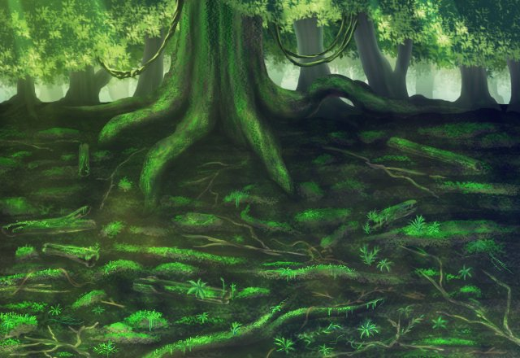

リム
さて、ここに女帝さんの宝が 眠っているはずなんですが…。
リム
やっぱり宝箱はおろか、 それっぽい洞窟すらありませんねー。
リム
うーん、宝があるという情報は やはりウソだったんでしょうか？
リム
まあ、噂なんてそんなもんだと 言ってしまえば、それまでですが……。
大樹に至りし者よ。目に映る宝を求めよ。
さすれば、標の一つが与えられん。
それは三つの導きの一つなり。
全ての標が揃いし時記憶の扉は開かれん。
リム
“標（しるべ）”というものを この場に3つ持ってくれば、
リム
とりあえず、目的地には到達したわけですし 任務はこれで達成ということで！
リム
ルジーナさんはまだいらしてないですが、 合流しても大変なことになりそうなので
リム
……でも、やっぱりちょっと モヤモヤしますね……。
リム
あ、失礼しました！ 大丈夫です！気にしないでください！
リム
それじゃあ、先輩！ 今回の任務、お疲れ様でした♪